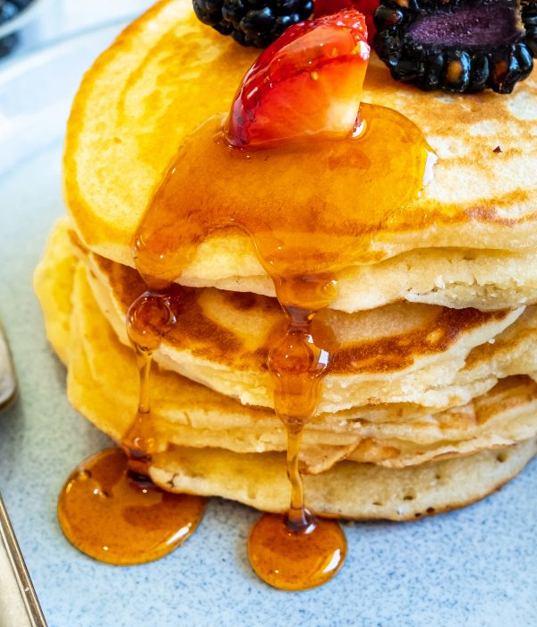

Protein Pancakes

Simply Traditional Ham and Bananas with Hollandaise
Those Saturday morning family pancakes made just that little bit better with the addition of some Protein.
A traditional pancake recipe with the inclusion of the protein which we guarantee no one will know is in there.
Hide that little bit of nutrition in their breakfast before the weekend sport.
And don't always believe what the ad says!
Ingredients
- 1.5 Cup All-Purpose Flour
- 1 Teaspoon Salt
- 1 Tablespoon White Sugar
- 1.25 Cups milk
- 1 Egg
- 3 Tablespoons of Melted Butter
- 1/3 Cup of Baking Protein
Steps
- Sift all dry ingredients (flour, baking powder, salt, sugar & Davis Baking Protein) together in a large bowl.
- Create a well in the middle and add in wet ingredients (milk, egg, melted butter). Combine until smooth and no
remaining lumps.
- Lightly oil desired frying pan over medium-high heat.
- Pour approximately ¼ cup of pancake batter into frying pan.
- Once larger bubbles form on the surface, flip over pancake. Cook until both sides are lightly golden in colour.
- Serve on own or add toppings as desired.